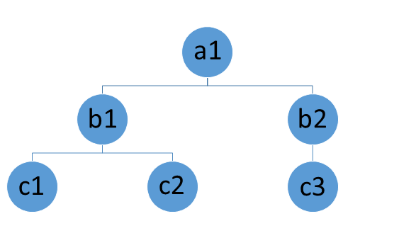
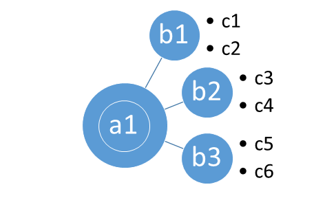
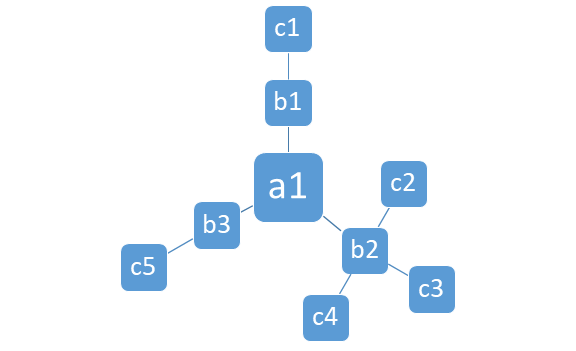
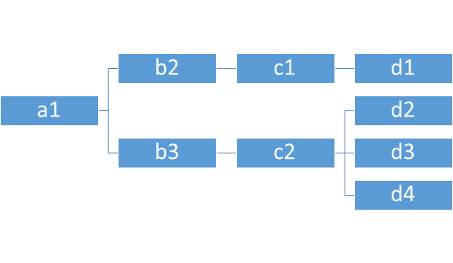

Guide to Creating a Choose-Your-Own-Adventure in Prolog
by Stephanie Price
Version 1.0.0
Last update: 22/04/2018
1.0 Introduction
Welcome! This is the documentation for creating a Choose Your Own Adventure (CYOA) interactive story using SWI-Prolog. I have created an example of a game, CHIP, for you to play and witness for yourself the capabilities of CYOA interactive stories written in the Prolog logical programming language. This documentation will outline the uses of these adventures, the strengths, weaknesses, and capabilities of this program for text adventures, and most importantly, the details on how to make your own adventure starting from first crafting the story to the individual rules in the program. Let's begin!
Some useful tools we will be referring to in this guide:
1. An fully-functioning example program (Sample.pl and its knowledge bases KB_ITA, KB_ESP, and KB_ENG). This contains a complete story translated in three languages.
2. A template program for you to build your own (Shell.pl and Shell_KB.pl).
You will need:
SWI-Prolog compiler, available as a free download from http://www.swi-prolog.org/
Notepad++ or another text editor of your choosing. Notepad++ can be downloaded for free from https://notepad-plus-plus.org/
1.1 Uses
Why would you want to craft your own CYOA story and what could you do with it? There's many reasons! Here's just a few:
- To make your stories more interesting and engaging for your readers
- To create unique and highly personalized gifts for friends and family
- To write fanfiction
- To create your own games
- To practice a foreign language
1.2 Strengths
The strengths and weaknesses refer to the capabilities of this particular program and the template provided, not of the capabilities of SWI-Prolog.
- Simple design. For a CYOA supporting one language, there are only 2 rules total. Almost all of the program's complexity comes from the knowledge base and that is dependent solely on how complicated your story is.
- Makes writing more fun
- Makes reading more fun
- Can support multiple languages
- Users can switch languages at any time
- Excellent way to practice reading and writing foreign languages
- Introduces users to logic-based programming in a highly relevant way
- Can support endless complexity and creativity in story outcomes and options
- Supports multiple action types at each node.
- Small size
- Easy for users to use the program
- Easy for users to make their own program
- Small size (the .exe game and its required files are only 32 MB!)
- Fast
- Compatible with users using screen readers.
- Text-based, typing-only.
- Can start at any point in the story and can easily go back to a previous point in the story.
- This is a completely free program for others to use and no advertisements!
1.3 Weaknesses
- No GUI support with this program.
- No ability to carry over changing values. For example, no capability of having a modifiable inventory list or health hitpoints.
- No user input features (such as custom character names)
- No clicking, which may be more difficult for some people to use.
- Syntax limitations. For example, action codes can never start with a capital letter, can never contain spaces, and must end with a full stop.
- Lack of robustness to user mistakes; any typos will kick the user out from the read-write loop for input.
- No word-wrap with Prolog interface, so reading is less than optimal.
- No text markup (bolding, italicizing, underlining, font type or size changing) possible
1.4 How to Play
From .exe (Windows only)
Use this option if you do not have SWI-Prolog installed. You only need SWI-Prolog installed if you want to make your own CYOA or if you are wanting to play the game on a non-Windows operating system.
Step 1:
Unzip the folder CHIP.
Step 2:
Doubleclick on the file "chip" to open it. Please keep the chip.exe file inside the CHIP folder with the .dll files or else the program won't work!
Step 3:
Start playing and enjoy!
From .pl (SWI-Prolog needed)
Step 1:
Open SWI-Prolog.
Step 2:
On the top menu bar, go to File > Consult and select the .pl file. To play the game, you want to select Sample.pl.
Step 3:
Start playing and enjoy!
Further Details on How to Play
- Carry out an an action by typing the action code followed by a full-stop, then pressing enter. Your input cannot contain capital letters or spaces and must always ends with a full-stop.
- If you typo at any time:
1. Type a full-top (.) and nothing else and hit the enter key to reset the input system. You will receive an error in red text saying "Syntax Error" and this is supposed to happen!
2. Type begin. again and hit the enter key.
3. Type your most recent action code, (example: a0. ) and hit the enter key to return to your last position.
- To exit the program, click the X in the top right-hand corner. Alternatively, you can exit the input system by typing a full-stop (.) and then typing halt. exactly as seen.
2.0 Composing a Story
Step 1:
Write your story in a separate document.
You can make it a linear story with only a single ending and only a single action the user can take at any turn. Alternatively, you can make it very complex with multiple plot lines, endings, and actions at every turn. Every crossroads where the user is able to make a decision is called a node, and each node has at least one action possible or is an ending.
List of possibilities for each node:
- dead-end (such as an ending)
- one-action
- multiple actions all leading to the same succeeding node
- multiple actions each leading to different nodes
Each of those possibilities has been reflected in the sample story.
Step 2:
Assign action codes to every option in your story. Each action needs a code that the user can select. For assigning your action codes, I recommend using a combination of letters and numbers. For instance, if your first node (node a) has 3 actions possible, you could assign the codes to be a1, a2, and a3. Your action codes must begin with a lowercase letter; they cannot begin with an uppercase letter or a number. Once you go through letters a-z, you can double the letters (node aa, ab, ac...zz) or even triple the letters. In that way, the complexity of your story is endless.
Step 3:
Draw your story diagram. This is a visual representation of all the possible options in your story. It will help in creating your knowledge base. Another section details different methods to organizing your story diagram.
Step 4:
Code your knowledge base using the examples in the sample story and in the template provided (Shell_KB.pl).
Step 5:
Customize your start screen, help, and introduction screens in the template provided as seen in the sample story.
2.1 Story Ideas
If you are needing inspiration, here is a list of some story ideas highly compatible with CYOA.
- Take a walk in a mysterious forest. Where are you going to go?
- You're the king of the country. What are you going to do?
- You have a romantic dinner date with someone at your house. How is it going to go?
- You've been wrongfully imprisoned. How are you going to escape?
- You're stuck on a deserted island. How will you reach civilization?
- A zombie apocalypse has just started. What will you do?
- You've discovered that you have a magical fairy godmother! What will you do?
- You find a genie lamp. What will you wish for?
- You've accepted a quest to deliver a precious package to the neighboring kingdom. What will happen?
- You've bought a piece of land and now you want to create your own homestead. How will it go?
2.2 Story Diagrams
For a captivating and complex CYOA, the most important part is organizing your story diagram. This helps you write and code for each section without getting yourself confused, as well as helping you keep track of the action going on in each storyline.
Without an organized diagram to guide you, you risk problems such as unintentional dead-ends in your stories and circular plotlines without any ending at all. This can frustrate the user and cause them to quit playing.
Here are some ideas for ways to organize your story's plotlines. These diagrams came from Microsoft Word, which you could use to create your own. Or, you could use these images as inspiration to draw your own diagrams on paper.
Circle Hierarchy

Radial Circles

Radial Grouping

Square Hierarchy

3.0 Writing Programs
Using SWI-Prolog:
Upon opening the program, you will see a simple text-interface similar to the command prompt. To load your program files, click on the top menu bar: File > Consult and select your program. Prolog files end with extension .pl.
If you make a change to your code in a different window and want to reload it, go to File > Reload Modified Files. Note that the start screen rule will only run once per instance of Prolog; it will not run a second time upon reloading the modified file. You have to exit SWI-Prolog and then re-enter to see it again.
Using Notepad++:
You can write your programs here and save the file with a .pl extension. Notepad++ will interpret your file as Perl code but it will still load fine with SWI-Prolog.
In Prolog, use /* comment */ for multi-line comments and % for single-line comments.
3.1 Program Rules
Explanation of each rule in the program
:- set_prolog_flag(encoding, iso_latin_1).
Allows for accents in non-English languages. Not necessary if program will not be using a language containing accents or special characters.
:- consult('Shell_KB.pl').
Imports the knowledge base to use for your program. Keeping your knowledge base in a different file is helpful to avoid cluttering the code of your main program with a lot of text. This especially becomes significant when you have support for multiple languages. However, it is not required.
start:-
write('Text').
:- start.
This immediately displays text when the program initializes, without need for user input. This is useful for providing immediate instructions on how to interact with the program.
begin:-
write('Text'),
repeat,
read(Input),
story(Input, Output),
write(Output),
fail.
This method creates a read-call loop that all the rest of the rules of the program will be run in. Without this, every action would return "true" after the corresponding response. This rule also makes it so that users only need to type the action code (example: a0.) and not the entire rule from the knowledge base (example: story(a0).
Users can accidentally leave this method if they make a typo (so that their rule does not correspond to any rule the program knows). To return, simply type a full-stop (.) and press enter, then type begin. again and then type the action and action code from your latest turn.
3.2 Formatting Tips
- \n creates a line break. However, responses within single quotation marks (' ') are sensitive to whitespace so this is not necessary there.
- \r creates a carriage return (tab). As the above, it is not necessary if it is within single quotation marks.
- To print \n or \r, add an additional \ before them. For example, \\n or \\r. The \ is called an escape sequence.
- Single quotation marks require an escape sequence so that Prolog does not interpret them as the end of your statement. To do so, add a \ before them. For example, \'.
- An escape sequence is not necessary for double quotation marks, (" " ).
- nl in Prolog code creates a newline between writes.
3.3 Language Support
It is very simple to support multiple languages with this program.
(Recommended) Method 1 (as used in Sample and in the Shell template): Keep the same action codes
Step 1:
Translate your story into the languages you wish to support.
Step 2:
Create a separate knowledge base for each story in each language. This is recommended to keep your code more organized, but it is not mandatory. You can maintain the same action codes.
You will need to use different names for each rule in the knowledge base to be able to have separate languages.
For example, as seen in the Sample program, the English knowledge base's rules are called "story". The Spanish knowledge base has its rule called "historia" and the Italian knowledge base has "storia".
Step 3:
We must also use different rules in the main program so that users can interact with the program in different languages. You will need to create a differently named rule for the text parsing rule, begin (as seen in the Sample program).
For example, as seen in the Sample program, for the original "begin" rule, there were versions for Spanish and Italian named "comenzar" and "iniziare", respectively.
Additionally, inside the rule, you must modify the line of code connecting the user input to the knowledgebase response. This is because we want users to enter the same action codes no matter the language. As seen in Sample.pl, the code says:
story(Input, Response)
You want to change "story" for each language you are supporting to correspond with what you titled that rule in the knowledge base.
Thus for the Spanish rule, it is identical to the English rule except that the same line looks like this:
historia(Input, Response)
Don't forget that the Spanish rule is named differently too- it is called comenzar instead of begin.
Method 2: Keep the same rules, change the action codes
You can opt to avoid renaming the rules of your program and instead change the action codes the user has to input.
For example:
The English version could have action codes labeled a1.
The Spanish version could have its action codes labelled aa1, or espa1, or a1_esp, and so forth.
However, this means the user has a more complicated input so it is less recommended. Another downside is that this will not affect the language of text displayed in the "begin" rule, either.
For both methods:
Many languages will need special characters. To enable this, add the following to your program (as seen in Sample and Shell):
:- set_prolog_flag(encoding, iso_latin_1).
Additionally, you may also need to modify your file to be in UTF-8 encoding format. The knowledge base files and your main file must be in UTF-8. UTF-8 without BOM (byte order mark) does not work.
To do so in Notepad++:
At the top bar, select Format > Coding in UTF-8.
3.4 Conversion into .exe
This program can be converted into an executable file for use on computers that do not have SWI-Prolog compiler installed. The following is how to create an .exe for Windows operating systems; the instructions for other operating systems can be found in SWI-Prolog user manual.
Step 1:
Doubleclick on your program's .pl file to open it up in SWI-Prolog. Be careful- this does not appear to work if you instead open up your file by first opening SWI-Prolog and then clicking Consult > File > your file's name.
Into SWI-Prolog (not your program), type:
qsave_program(nameOfNewExe, [stand_alone(true), goal(Nameofstartmethod)]).
qsave_program is a predict that saves the current state of the program to a File.
nameOfNewExe will be the name of the new executable file you will be generating. Do not add file extensions here (like program.exe); you just need a name. The name cannot start with a capital letter.
stand_alone(true) indicates that the first part of the state you will be saving is an emulator so that the resulting executable is independent of the runtime environment or location where it was built.
goal indicates the rule that you want to run in the executable. You will want to put here the name of your method showing the startscreen so that the user knows what to input to begin the story.
An example based on the sample program:
qsave_program(chip, [stand_alone(true), goal(start)]).
Step 2:
Your .exe file will be saved in the same location as your other Prolog projects.
However, it cannot be ran unless you have a few files from your Prolog installation in the same folder with it.
Go to the installation location on your computer for your SWI-Prolog files. You can ask Prolog where it is by typing into SWI-Prolog:
current_prolog_flag(home,Home).
Usually the location is C:\Program Files\swipl.
There, navigate to the bin folder and copy the needed files to the folder where your .exe is located. The 9 files needed for my Sample.pl program are:
libswipl.dll
libdwarf.dll
libgmp-10.dll
libwinpthread-1.dll
libgcc_s_seh-1.dll
plterm.dll
libgcc_s_seh-1.dll
libjpeg-9.dll
pl2xpce.dll
process.dll
You will need to test your .exe on a computer without SWI-Prolog installed to ensure that it has the necessary files to run. If you have SWI-Prolog on your own computer, it will run regardless if you are missing necessary files.
If you are having trouble getting your program to run because you are missing files, try this troubleshooting process of necessary vs sufficient:
1. Create a folder labeled "Exe" that contains your .exe program.
2. Create a second folder labeled "Trash".
3. Copy all the files in swipl/bin folder and paste them to your Exe folder.
4. Remove a small group of files at a time (4-5) from the Exe folder to the Trash folder.
5. Try running your program to see if it works. If it doesn't, add one file at a time from the Trash folder back to the Exe folder until it does work. The file that made the difference between it running and not running is a necessary file. When it does work, you can delete all the files in your Trash folder and repeat from step 4.
Now you have a convenient .exe file that anyone can use!
4.0 Tips
- You can import an unlimited number of knowledge bases. Thus, for complex or longer stories you may want to use the knowledge bases for additional organization. For example, a different knowledge base for each chapter or for each storyline.
- There is capability for some simple character customization options. For example, at the beginning there could be options to select the sex of a character and the name from a list of options. Then write the corresponding story text available for the actions of that branch of the story to use that name and sex.
- When programming, it is first helpful to write out the rules of your program and the skeleton of your knowledge base (with only the action codes and short responses). Then, run the program and make sure it works as intended. Add the actual story text once you know the program is working. The story text is very long and trying to debug around it will be more difficult.
- If you leave the program and later want to return to where you left off, all you need to do is remember the action code you last used.
- You can switch to a different language at any time simply by exiting the input loop by typing a full stop (.) and hitting enter, then typing the beginning statement for that language. For example, comenzar.
- If you leave the read-write loop, simply type begin. (or the equivalent statement in your program), hit enter, type the action code for the last action you took, and hit enter.
- The start screen will only appear when the program is consulted for the first time in a new instance of SWI-Prolog. If you consult the program, see the welcome message, make a change to the code and then reload the modified file, you will not see the start screen's message again. You must close SWI-Prolog and re-open it.
- The start screen also will not appear if you access your program by clicking on the file and having SWI-Prolog appear. You must open SWI-Prolog and select Consult > File > your file's name.
Happy creating!